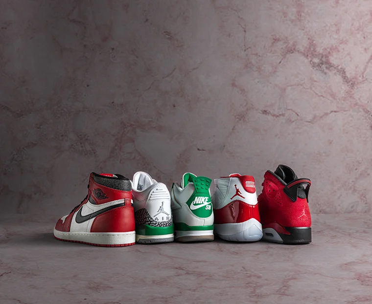
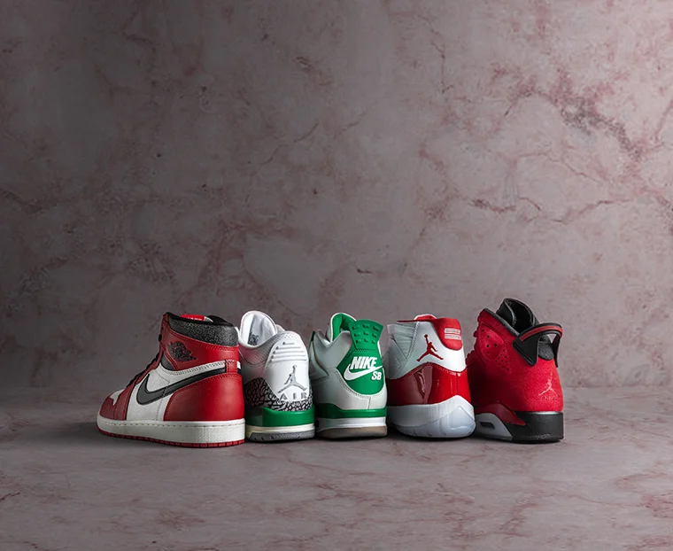

Early Life
During my early years, I loved entertainment. And till this day, my favorite childhood show is Ben 10. I remember so strongly wishing for a strange device to fall from the sky and change my life drastically. As I grew, reality began to set in, life wasn't a cartoon where alien devices could transform your existence. Instead, I started to discover the real-life ways I could change my own destiny. School became my focus to achieve my goals. Though it wasn't as thrilling as battling aliens, the challenges I faced in my education shaped my early life. My parents, who worked tirelessly to provide for our family, instilled in me a strong work ethic. They emphasized the significance of education as a path to a better future. Their unwavering support and sacrifice were constant reminders that while I may not have an Omnitrix to alter my world, I had the power within me to make significant changes through dedication and effort. As I navigated my way through the educational system, I encountered teachers and mentors who further fueled my desire to learn and excel. They introduced me to new subjects, ideas, and possibilities I had never considered before. This period marked the beginning of my journey toward personal and academic growth, a journey that would eventually lead me to pursue higher education and my dream of working in the tech industry. The dream of an alien device falling from the sky might have faded, but in its place, a new dream was born that was rooted in reality, driven by ambition, and supported by the belief that with hard work and determination.

Hobbies
As a younger brother, annoying your older siblings is a given. The way I chose to annoy my sister was by begging her to make me a YouTube channel for three years. When I was finally 9 years old, my sister caved in so she could watch TV in peace. Over the next couple of years, my passion for content creation began to shift from some fun game to something I truly valued. Initially, my videos were simple and unrefined, often featuring me live streaming a random game on my PS4 or attempting to mimic my favorite YouTubers. Despite their amateur quality, creating these videos was thrilling. I loved the process of filming, editing, and seeing my work come to life on the screen. As I continued to create content, I started to understand the complexities of video production. I experimented with different editing software such as: CapCut, ShareFactory, Sony Vegas 17 and many more slowly beginning to develop my own style. What started as a hobby turned into a serious interest. I was no longer just recording for fun; I was striving to improve and create high-quality content that I could be proud of. This growing passion also taught me valuable skills beyond video production. I learned about time management as I balanced schoolwork with my YouTube projects. I developed problem-solving abilities as I encountered and overcame technical challenges. Most importantly, I discovered the importance of perseverance. There were times when I felt frustrated with my progress or doubted my abilities, but my determination to keep improving kept me going. Now, as I continue to explore new avenues and challenges, I carry with me the lessons I learned from those early days on YouTube. What started as a simple desire to be like my favorite content creators has evolved into a profound appreciation for the art of storytelling and the power of media. This journey has not only helped me grow as a creator but also as an individual, equipping me with skills and experiences that will undoubtedly benefit me in all my future endeavors.
.png)
 

Passion
As 12-year-old Emmanuel was doodling in his notebook during science class, he looked up at Mr.E in confusion when the word “STEM” was mentioned during his lecture. While watching each letter of the acronym being spelled out with an explanation spaced in between, his eyes lit up with fascination. Wondering why and how science, technology, engineering, and mathematics could be so related sparked a huge interest in me. This experience solidified my decision when I ripped open my acceptance letter to the Diana C. Lobosco STEM Academy almost a year later. Upon fully endorsing myself as a STEM student, I noticed a lack of diversity on campus. This realization made me spiral into confusion: why was there such a minority of Hispanic students within my high school? Surprisingly, the answer to my confusion came from AP Computer Science Principles. Ms.Yunus began to explain the concept of the “digital divide,” and everything seemed to start making sense. Learning that many people from underrepresented areas and backgrounds, like Hispanics, aren’t given the opportunity to learn about technology or receive knowledge within many STEM fields due to their circumstances troubled me. Subsequently, a year later, when ChatGPT was released, I wondered, “Does everyone in every country have equal access to ChatGPT?” so I asked the bot to answer. Upon further research, the digital divide within many other countries limits the true potential of ChatGPT. These limitations occurred for several reasons: systematic, circumstantial, or lack of access. However, the fact of the matter was as the bot went through its training, the data it collected could not accurately represent groups from underrepresented areas. Immediately, the thought of, “How can I fix this?” plagued my mind. Determined to create change within my community led me to another non-profit organization called New City Kids, where I work as a teen life intern. Our mission is to love kids for change, specifically those from Paterson, where children’s education tends to get overlooked. During my time at New City, not only have I tutored many children from grades K-8, I have become one of the program's newest STEAM instructors. Each week, my co-teachers design lesson plans for our students to allow them to learn more about the ever growing STEM field. These topics include electricity, circuits, multiplication/division, light waves, etc. Witnessing my student's eyes light up when introduced to new, exciting topics has solidified my interest in STEM. As someone who comes from a low-income and systemically disadvantaged area, I resonate with all of my students at New City. Being allowed to attack the digital divide, one lesson at a time has shown me that the systemic barriers designed for my students to fail don’t have to limit them. I take pride in sharing these revelations with my students, allowing them to propel themselves into a future full of possibilities.